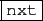

suivant: L'écran DispG et l'instruction
monter: L'éditeur de programmes
précédent: La barre de menus
Table des matières
Index
-
 permet de chercher la prochaine apparition du mot
spécifié dans le menu Edit
 Rechercher (même si
la boite de dialogue de Rechercher a été fermée).
Rechercher (même si
la boite de dialogue de Rechercher a été fermée).
-
permet de compiler le programme ou le script se
trouvant dans l'éditeur pour pouvoir utiliser le programme dans un autre
niveau. Si il y a une erreur, le numéro de la ligne où se
trouve l'erreur est indiqué aprés le programme dans l'emplacement pour les
affichages intermédiaires et aussi dans la zone de messages
du bandeau général. Si il n'y a pas d'erreur, il y a Success dans ces
deux zones.
-
 permet de sauver le programme ou le script.
permet de sauver le programme ou le script.
Documentation de giac écrite par Renée De Graeve